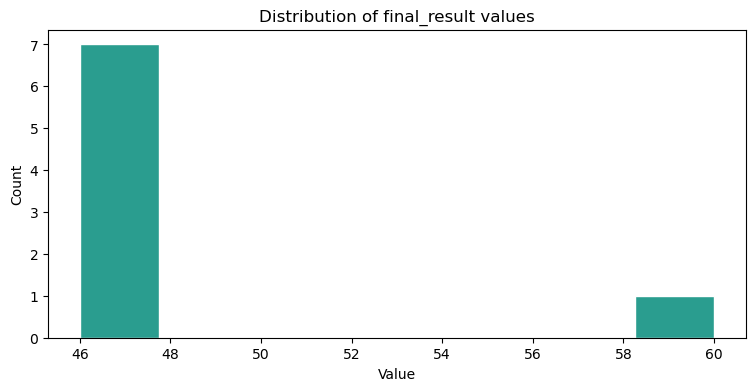
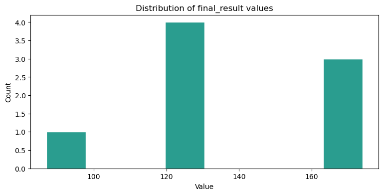

Visualizing result consistency during iterative code improvement#
Sand-Bob gives the opportunity to inspect results of iterative code-improvement steps. After generating and executing code, the execution result is stored. Afterwards, Sand-Bob improves the code, executes it again and also these results are stored. By running the entire process multiple times, we can get an idea about how consistend results are.
Note: Consistent results are necessary but not sufficient condition for functional correctness. If 10 executions lead to 10 different results, one can conclude that at least 9 of the result must be wrong. But if 10 executions lead to equal results, this does not necessarily mean that those are correct.
from sand_bob import generate_code, config_kiara, config_scadsai_llm
#config_kiara()
config_scadsai_llm()
First, we demonstrate consistency between results and also over iterative code improvement using a code-generation prompt where the goal of the data analysis is quite precisely defined.
results = generate_code("""
I would like to segment the bright blobs in input_data/image.tif and count them.
For segmentation, use otsu-thresholding, connected component labeling and remove the objects sitting on the image border.
The final result should be a number.
""",
input_host_path="input_data",
dependencies=["numpy", "scikit-image", "tifffile", "pandas", "matplotlib"],
n_parallel=3,
n_iterative=3,
n_codefix_attempts=2,
n_feedback_iterations=1,
final_touch=False,
)
We can visualize a summary of the final results:
results.display_result_summary()
Total results with final_result: 8
Dominant type: numeric
Counts -> Numeric: 8, String: 0, Image: 0, DataFrame: 0, Other: 0

And we can also visualize how these results changed from one code-improvement iteration to another. The final results are shown on the right:
results.display_result_history()
| Process 1 | 60 | AttributeError | TypeError | TypeError | TypeError |
| Process 2 | TypeError | 60 | 60.0 | ||
| Process 3 | 46 | 46 | |||
| Process 4 | 46 | 46.0 | |||
| Process 5 | AttributeError | 46 | 46.0 | ||
| Process 6 | 46 | 46 | |||
| Process 7 | 0 | 46.0 | |||
| Process 8 | AttributeError | 46 | 46.0 | ||
| Process 9 | 46 | 46.0 |
Note that in the example above, the iterations end earlier compared to the example below.
Imprecise prompting#
Second, we execute a prompt which is more vague and the goal is less clear.
results = generate_code("""
I would like to segment the bright blobs in input_data/image.tif and count them.
""",
input_host_path="input_data",
dependencies=["numpy", "scikit-image", "tifffile", "pandas", "matplotlib"],
n_parallel=3,
n_iterative=3,
n_codefix_attempts=2,
n_feedback_iterations=1,
final_touch=False,
)
results.display_result_summary()
results.display_result_history()
Total results with final_result: 9
Dominant type: numeric
Counts -> Numeric: 8, String: 0, Image: 0, DataFrame: 0, Other: 1

| Process 1 | TypeError | 61 | AttributeError | TypeError | 174 | |
| Process 2 | TypeError | 59 | AttributeError | 171.0 | ||
| Process 3 | 61 | AttributeError | 173.0 | |||
| Process 4 | TypeError | 61 | AttributeError | 120.0 | ||
| Process 5 | TypeError | 61 | AttributeError | TypeError | 120.0 | |
| Process 6 | TypeError | 61 | AttributeError | TypeError | 120 | |
| Process 7 | TypeError | 61 | ImportError | ImportError | ValueError | <class 'dict'> |
| Process 8 | AttributeError | TypeError | <class 'dict'> | AttributeError | 87.0 | |
| Process 9 | 61.0 | AttributeError | 120.0 |